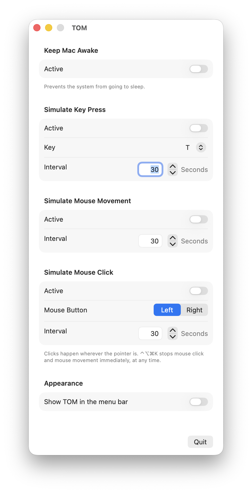

Keep your Mac awake — and looking busy.
A small macOS utility that stops your Mac from falling asleep and, if you want, simulates key presses, mouse movement or mouse clicks at an interval you choose. Free, open source, no account, no tracking.
macOS 13 Ventura or later · Apple Silicon · GPLv3

Every function works on its own. Turn on what you need and close the window — TOM keeps running in the background.
Stops the display and the system from going to sleep, regardless of your energy settings. Uses a power assertion, so it needs no permission at all.
Sends a real key press every 1 to 600 seconds. Pick any letter, number, arrow or special key — labels follow your keyboard layout, so QWERTZ and AZERTY show the right characters.
Nudges the pointer one pixel and immediately back. No click, no visible jump — just enough for the system to see activity.
Clicks the left or right button wherever the pointer sits, as often as ten times per second. Stops by itself after eight hours.
Built-in emergency stop. While the mouse functions run, ⌃⌥⌘K stops them instantly from any app — you never have to click your way back into TOM. Both mouse functions also start with a five-second countdown, and neither of them switches itself back on after a restart.
A few practical details before you download.
English, German and Spanish, picked automatically from your system language.
Switch on the menu bar icon and every setting is one click away, whichever app is in front. Leave it off to keep your menu bar tidy.
Keeping the Mac awake needs nothing. The key and mouse functions ask once for Accessibility.
TOM is free software under the GNU GPL v3. If it saved you some hassle, you can leave a tip.
Buy me a coffee